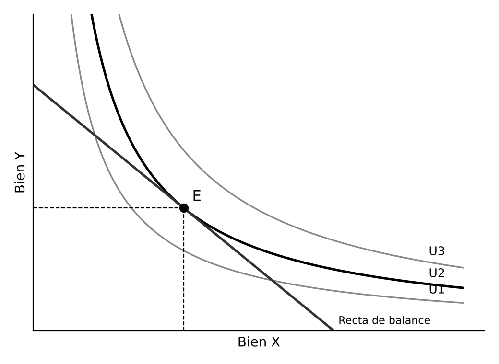
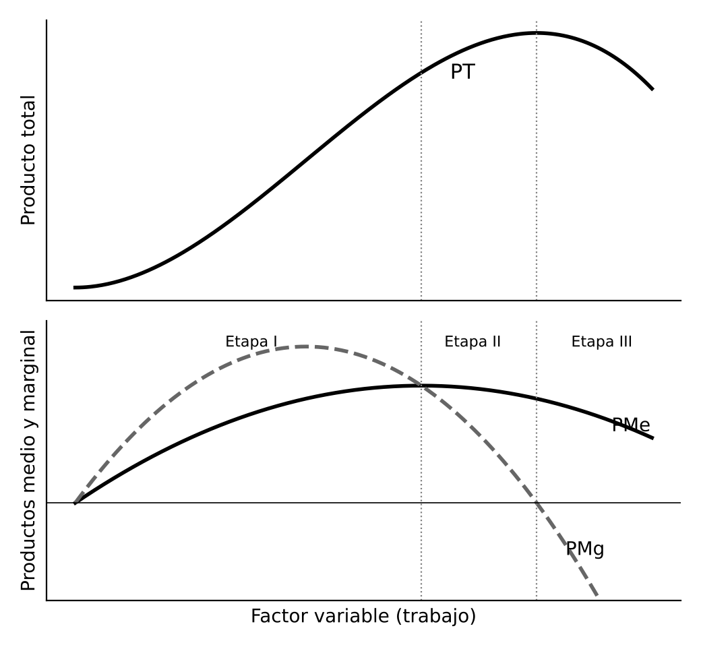
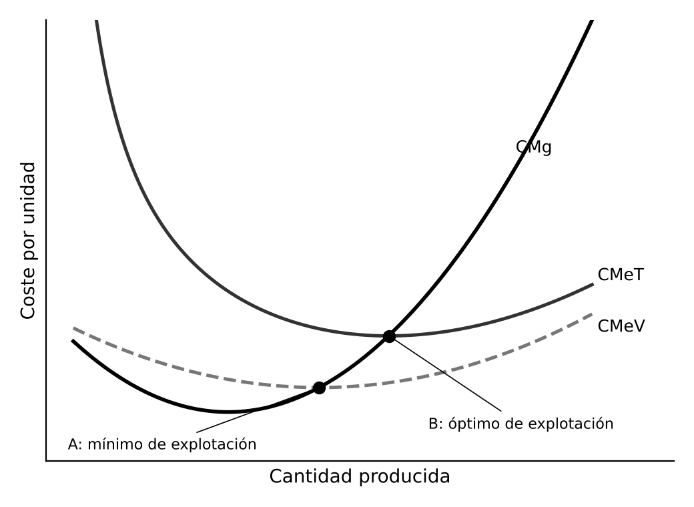

Teoría de la Demanda
Teoría de la producción. Teoría de los Costes.
01INTRODUCCIÓN
La microeconomía estudia cómo deciden los agentes individuales y cómo interactúan en los mercados para asignar recursos escasos. Las decisiones de los consumidores se estudian en la teoría de la demanda y las de las empresas, sujetas a restricciones técnicas (teoría de la producción), económicas (teoría de los costes) y de mercado (teoría de los mercados, ajena a este tema). Las tres teorías siguen el mismo esquema: un agente racional que optimiza sujeto a una restricción.
02LA TEORÍA DE LA DEMANDA DEL CONSUMIDOR
La teoría responde a qué bienes y en qué cantidad adquirirá el consumidor dados los precios y su renta. La respuesta es la función de demanda, y el punto de partida es la utilidad, la satisfacción que proporcionan los bienes.
2.1La teoría cardinal de la utilidad
Es el enfoque de los marginalistas del siglo XIX y supone que la utilidad puede medirse. Distingue la utilidad total, satisfacción del consumo de una cantidad de un bien, y la utilidad marginal, satisfacción de la última unidad. Según la ley de Gossen de la utilidad marginal decreciente, esta disminuye al consumir más. Cuando llega a cero, la utilidad total es máxima, el punto de saturación.
El consumidor está en equilibrio cuando la utilidad marginal por euro gastado es igual en todos los bienes. De ahí se deduce una curva de demanda de pendiente negativa. Limitaciones: exige medir la utilidad, algo poco realista, y suele suponer la utilidad de cada bien independiente, por lo que explica mal la sustitución y la complementariedad.
2.2La teoría ordinal: preferencias y curvas de indiferencia
Pareto, y después Hicks y Allen (1934), desarrollaron el enfoque ordinal, base de la teoría neoclásica actual. Basta con que el consumidor ordene las cestas de bienes, sin medir su satisfacción. Sus preferencias cumplen cinco supuestos: completitud, transitividad, no saturación (más es preferible a menos), convexidad (prefiere la variedad) y continuidad.
Con ellos las preferencias se representan mediante curvas de indiferencia, que reúnen las cestas con la misma satisfacción, de pendiente negativa y convexas. Su pendiente es la relación marginal de sustitución (RMS), la cantidad de un bien a la que el consumidor renuncia a cambio de una unidad adicional del otro.
2.3El equilibrio del consumidor
La restricción presupuestaria, la recta de balance, recoge las cestas que el consumidor puede adquirir con su renta, y su pendiente es el precio relativo de los bienes. El equilibrio está en el punto en que la recta de balance es tangente a la curva de indiferencia más alta posible. Allí la RMS, que mide cómo valora el consumidor un bien frente a otro, coincide con el precio relativo, que mide cómo los valora el mercado.


Si cambian la renta o los precios, el equilibrio se desplaza. La curva renta-consumo da las curvas de Engel y la curva precio-consumo, la demanda individual.
2.4La función de demanda
Relaciona la cantidad demandada con el precio del bien, el de los demás bienes y la renta. Es homogénea de grado cero en precios y renta: si todos se multiplican por el mismo número, la cantidad no cambia, porque el consumidor no sufre ilusión monetaria.
La renta y la demanda. Los bienes normales aumentan su demanda con la renta, los de primera necesidad en menor proporción y los de lujo en mayor. Los inferiores la reducen.
El precio y la demanda. Cuando baja el precio de un bien actúan dos efectos, según Slutsky y Hicks:
- Efecto sustitución: el bien es relativamente más barato y se demanda más. Siempre actúa en sentido contrario al precio
- Efecto renta: aumenta la renta real. Refuerza al anterior si el bien es normal y lo contrarresta si es inferior
Por eso la demanda casi siempre baja al subir el precio, la ley de la demanda. La excepción teórica son los bienes Giffen, inferiores en los que el efecto renta supera al efecto sustitución y la demanda sube con el precio.
Las elasticidades. Miden en porcentaje la sensibilidad de la demanda:
- Elasticidad precio: la demanda es elástica si la cantidad varía más que el precio e inelástica si varía menos
- Elasticidad renta: distingue bienes de lujo, de primera necesidad e inferiores
- Elasticidad cruzada: positiva para bienes sustitutivos, como café y té, y negativa para complementarios, como coche y gasolina
La elasticidad precio es mayor cuantos más sustitutivos tiene el bien, cuanto más pesa en el presupuesto y cuanto más largo es el periodo. Si la demanda es inelástica, una subida del precio aumenta el ingreso de las empresas, y si es elástica lo reduce. La demanda de mercado suma las individuales, y el excedente del consumidor es la diferencia entre lo que estaría dispuesto a pagar y lo que paga.
2.5Otros enfoques de la demanda
Preferencia revelada. Samuelson (1938) construye la teoría solo con lo observable, las cestas elegidas a unos precios y una renta. Si elige A pudiendo adquirir B, ha revelado que prefiere A (axioma débil). Con supuestos más débiles llega a las mismas conclusiones que la teoría ordinal, de modo que la confirma desde otra base.
Características. Lancaster (1966) sostiene que el consumidor desea las características de los bienes, no los bienes en sí. Explica la diferenciación de productos y la aparición de nuevos productos.
Incertidumbre y economía conductual. La utilidad esperada de von Neumann y Morgenstern (1944) supone que el consumidor maximiza la media de las utilidades ponderada por su probabilidad. Kahneman y Tversky han mostrado que las personas se desvían de forma sistemática de la racionalidad, por ejemplo sienten más las pérdidas que las ganancias equivalentes. Completan la teoría tradicional sin sustituirla.
03LA TEORÍA DE LA PRODUCCIÓN
3.1La empresa y la función de producción
La teoría neoclásica ve la empresa como una unidad que transforma factores en productos para maximizar su beneficio, una simplificación deliberada. La función de producción recoge la cantidad máxima de producto con cada combinación de factores, dada la tecnología, e incluye solo métodos técnicamente eficientes. Según la sustitución entre factores:
- Proporciones fijas o de Leontief: los factores se combinan siempre en la misma proporción
- Sustitutos perfectos: un factor reemplaza a otro en proporción constante
- Cobb-Douglas (1928): caso intermedio, con sustitución cada vez más difícil
Las isocuantas reúnen las combinaciones de factores con la misma producción, equivalentes a las curvas de indiferencia. Su pendiente es la relación marginal de sustitución técnica (RMST), cuánto capital puede sustituirse por una unidad adicional de trabajo manteniendo la producción. La región económica es la de pendiente negativa y productividad marginal positiva de ambos factores.
Hay tres horizontes: el corto plazo, con algún factor fijo, el largo plazo, con todos variables y tecnología constante, y el muy largo plazo, en que la tecnología también cambia.
3.2La producción a corto plazo: la ley de los rendimientos decrecientes
Con un factor fijo, se definen el producto total (PT), el medio (PMe) y el marginal (PMg). La ley de los rendimientos decrecientes establece que, al añadir un factor variable a uno fijo, a partir de cierto punto el producto marginal disminuye y puede hacerse cero o negativo, porque cada trabajador dispone de menos maquinaria.
- Etapa I: el producto medio crece y conviene seguir contratando
- Etapa II: el medio disminuye pero el marginal es positivo. Es la etapa racional
- Etapa III: el marginal es negativo y un trabajador más reduce la producción total


3.3La producción a largo plazo: los rendimientos a escala
Indican cómo cambia la producción al aumentar todos los factores en la misma proporción:
- Constantes: la producción crece en la misma proporción
- Crecientes: crece en mayor proporción, por especialización o indivisibilidades técnicas
- Decrecientes: crece en menor proporción, por dificultades de coordinación en empresas muy grandes
No deben confundirse con los rendimientos decrecientes de un factor, que varía solo uno.
3.4El muy largo plazo: el progreso técnico
Permite producir más con los mismos factores y desplaza las isocuantas hacia el origen. Según Hicks es neutral si eleva en igual proporción la productividad del trabajo y del capital, ahorrador de trabajo si eleva más la del capital, como la automatización, y ahorrador de capital si eleva más la del trabajo.
04LA TEORÍA DE LOS COSTES
4.1El coste económico y la elección de factores
La empresa elige, entre las combinaciones técnicamente eficientes, la de menor coste para cada producción. El coste económico incluye el coste de oportunidad de todos los recursos, por lo que supera al contable al recoger, por ejemplo, el rendimiento que el empresario obtendría en otro uso.
Las rectas isocoste reúnen las combinaciones de factores de igual coste, y su pendiente es el precio relativo de los factores, salario entre precio del capital. El coste mínimo está donde la isocoste es tangente a la isocuanta, donde la RMST iguala al precio relativo de los factores. Si sube el precio de un factor, la empresa lo sustituye en parte por otro más barato.
4.2La función de costes y sus propiedades
Repitiendo la elección para cada producción se obtiene la función de costes, el coste mínimo de cada cantidad dados los precios de los factores. Es creciente en la cantidad, no decreciente en el precio de los factores, homogénea de grado uno en ellos y cóncava, porque la empresa sustituye el factor que se encarece. Producción y costes son dos caras de la misma moneda, la dualidad.
4.3Los costes a corto plazo
Los costes fijos no dependen de la cantidad producida y los variables sí. De ellos salen el coste medio total (CMeT), el medio variable (CMeV) y el marginal (CMg), coste de una unidad más. Las curvas son en forma de U, reflejo de las de producto: el CMg baja mientras crece el producto marginal y sube cuando este cae, y el CMeV es mínimo donde el producto medio es máximo.
El CMg corta a los costes medios en su mínimo. Quedan dos puntos clave:
- Mínimo de explotación (A): mínimo del CMeV. Con un precio inferior conviene cerrar
- Óptimo de explotación (B): mínimo del CMeT, con el menor coste por unidad


Entre ambos produce con pérdidas pero le conviene seguir, porque cubre los costes variables y parte de los fijos. En competencia perfecta produce donde el precio iguala al CMg, por lo que su oferta a corto plazo es el tramo del CMg por encima del mínimo de explotación.
4.4Los costes a largo plazo
Todos los costes son variables y la empresa elige el tamaño de planta. El coste medio a largo plazo es la envolvente de las curvas de coste medio a corto plazo, una por tamaño de planta, según Viner y Wong. La senda de expansión une las combinaciones de mínimo coste y da la función de costes a largo plazo. Su forma refleja los rendimientos a escala:
- Tramo descendente: economías de escala, por especialización, mejor uso de la maquinaria o mejores condiciones de compra
- Tramo ascendente: deseconomías de escala, por dificultades de dirección y coordinación
- Mínimo: escala óptima
Las economías de alcance aparecen cuando producir varios bienes juntos es más barato que por separado, por ejemplo al compartir instalaciones.
4.5Críticas y nuevos enfoques
- Flexibilidad. Stigler (1939): las empresas no siempre eligen la planta de menor coste sino una flexible, que se adapta a la demanda con poco sobrecoste
- Costes en forma de L. Muchas empresas tienen costes medios que bajan y luego se mantienen constantes, lo que da una dimensión mínima eficiente. Se suman las economías de aprendizaje
- Ineficiencia X. Leibenstein (1966): sin competencia se relaja el esfuerzo y se despilfarran recursos
- Objetivos de la empresa. Con propiedad y dirección separadas, Baumol (1959) propuso que los directivos maximizan la cifra de negocio y Marris el crecimiento. Simon (Nobel en 1978) sostuvo que, por su racionalidad limitada, buscan un resultado satisfactorio
- Costes de transacción. Coase (1937): usar el mercado tiene costes y la empresa existe para ahorrarlos. Williamson (Nobel en 2009) lo desarrolló
05CONCLUSIÓN
Las tres teorías comparten un método: un agente racional que optimiza sujeto a una restricción, con herramientas paralelas (curvas de indiferencia e isocuantas, recta de balance e isocoste, RMS y RMST). Dan la curva de demanda y las curvas de costes, base de la oferta. Son idealizaciones potentes aunque simplificadas, que la preferencia revelada, Lancaster, la economía conductual y las críticas de Stigler, Leibenstein o Coase han ampliado y matizado.